Back to Homepage
In this project we delved into geometric meshes, from implementing Bezier Curves through the Casteljau algorithm to manipulating triangle meshes with methods such as splitting and flipping edges and upsampling. This project benefitted from the use of the HalfedgeMesh struct, which facilitated the access to relevant elements of the meshes, such as vertex and edges, helping keep the code clean and readable.
============================================================================================
In the first part of the project, we had to modify the BezierCurve::evaluateStep(...) function in order to implement Bezier Curves into
the project through the Casteljau algorithm. Bezier Curves are used to create smooth curves from a set of input points that configure a line. The Casteljau
method achieves this by performing linear interpolation between adjacent points in the line with a parameter \(t\) that ranges between 0 and 1
in order to generate control points. Each step generates \(n-1\) control points, \(n\) being the amount of input points. The process is repeated recursively
until the algorithm returns a single and last point, which is then used in order to calculate the Bezier Curve, although that part was not supposed to be
implemented by us in this project. It is important to note that the modified function only deals with one step of the recursion, returning only one set of
control points, and is not responsible for dealing with the recursion to achieve the last control point.
The following images show the resulting steps in order to reach the final point and the completed Bezier Curve that was generated:
|
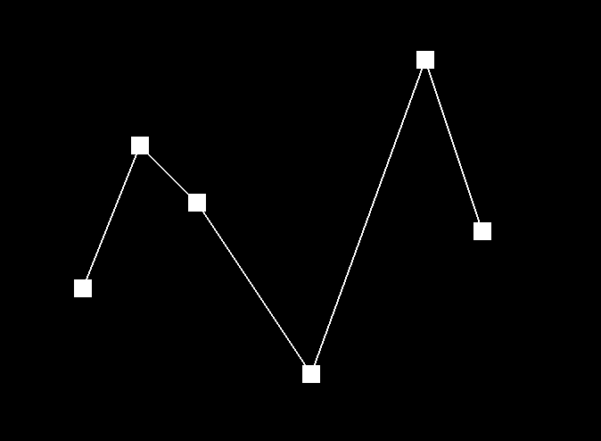
|
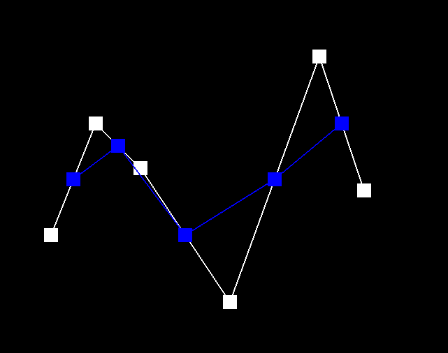
|
|
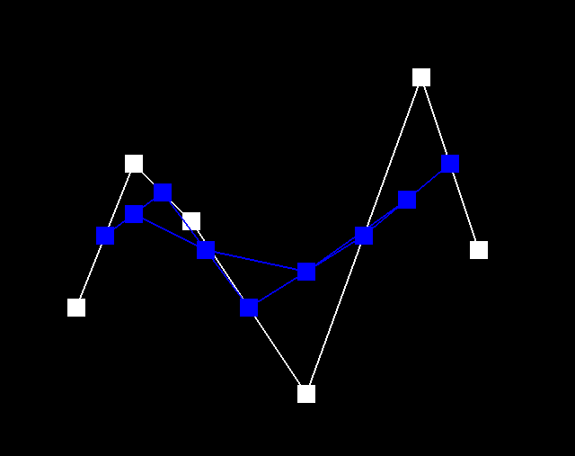
|
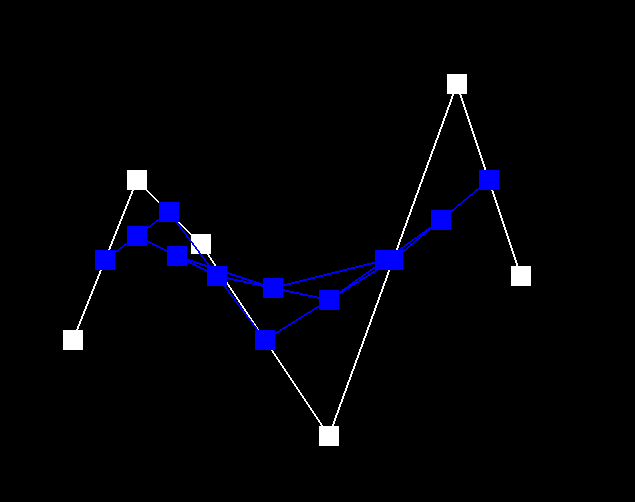
|
|
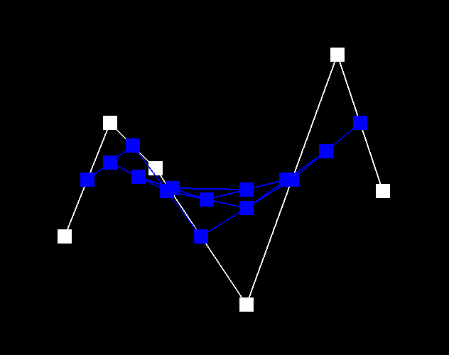
|
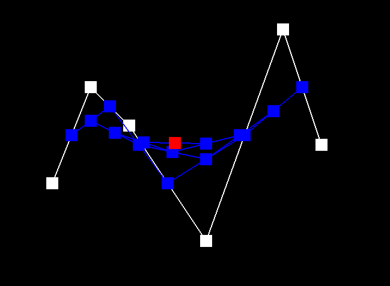
|
|
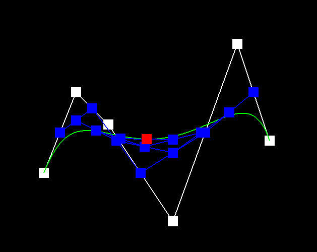
|
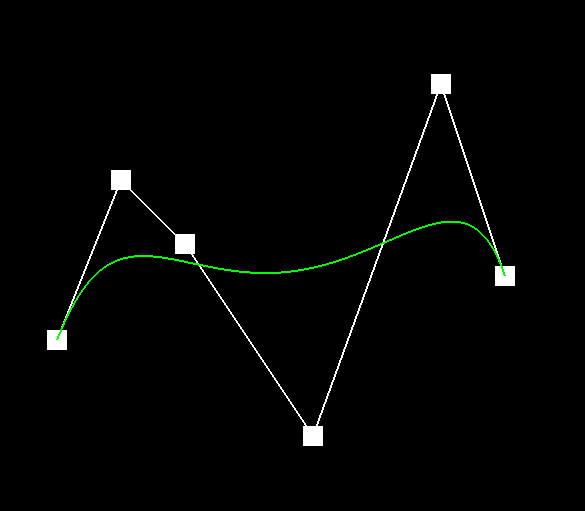
|
|
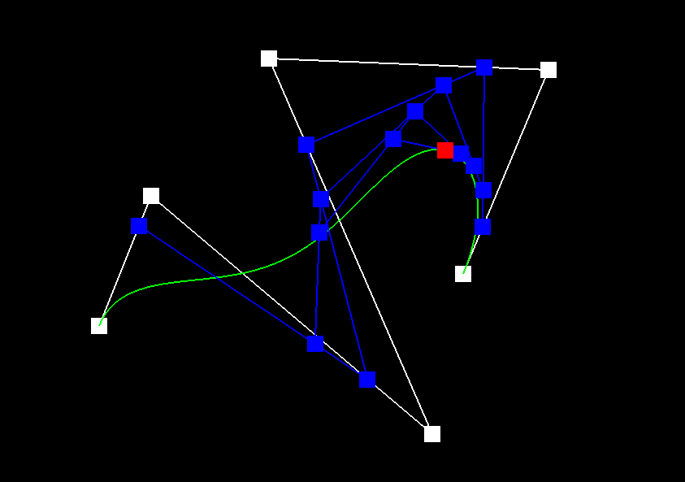
|
============================================================================================
In the second part of the project, we were asked to implement the Casteljau algorithm to Bezier Surfaces that are defined in a grid of \(n x n\) control
points with parameters \(u,v\), instead of the Bezier Curves. In order to implement this, we had to modify the functions BezierPatch::evaluateStep(...),
BezierPatch::evaluate1D(...) and BezierPatch::evaluate(...).
We started off by adapting the BezierCurve::evaluateStep(...) implemented in Part 1 to perform a Casteljau Subdivision to a 3D vector, instead
of a 2D one. Since the algorithm only performs a linear interpolation and returns the control points, this can be easily adapted by simply changing the
returning vector list to return Vector3D control points in place of Vector2D ones. The linear interpolation works regardless of size of vectors.
The BezierPatch::evaluate1D(...) function was also very simple to implement, as it is meant to return the last point of the Casteljau Sudivision
in a row or column of points of the Bezier Surface. Therefore, it was as easy as running a recursive loop on the BezierPatch::evaluateStep(...)
until the last step is completed, and returning the last point.
The last function to be implemented was BezierPatch::evaluate(...), which takes as input the \(u, v\) parameters of the point in the Bezier
Surface and returns the coordinates of the point that lies on the Bezier Surface. This is done by firstly running the BezierPatch::evaluate1D(...)
function on each row of the grid using \(u\) as the \(t\) parameter. The control points for the rows are saved, and we run BezierPatch::evaluate1D(...)
once using \(v\) as the \(t\) parameter and arrive at the point that lies on the Bezier Surface.
The image below shows the evaluation of bez/teapot.bez using the implemented code:
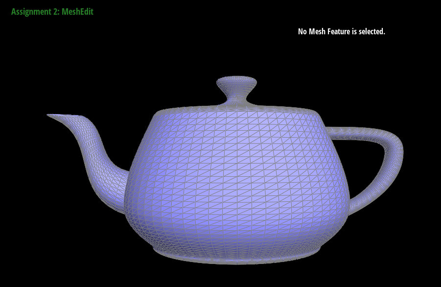
bez/teapot.bez evaluated by the Casteljau Subdivision algorithm |
============================================================================================
In this part we implement shading on a mesh surface by using area-weighted vertex normals. These normals can be used for Phong shading, which provides
smoother surfaces than flat shading. It is also worth mentioning that from this part of the project on, we will be using halfedge data structure, which
makes it a lot easier to work with the mesh. To implement this, we modified the Vertex::normal() function. In order to calculate the weighted
normal, we must iterate over all faces incident to the vertex. During each iteration, we gather all vertices that belong to that face, and we calculate the
normal of that triangle through the cross() function. The normal of each triangle is added to a vector that contains the sum of all normals
of the incident faces, and that vector is normalized in order into the area-weighted normal.
The images below show the comparison of a teapot with and without vertex normals. It is clear in the images how the applied vertex normals render a smoother model than the flat shading.
|
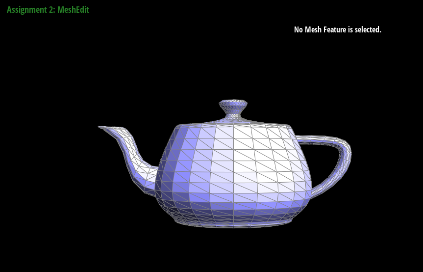
|
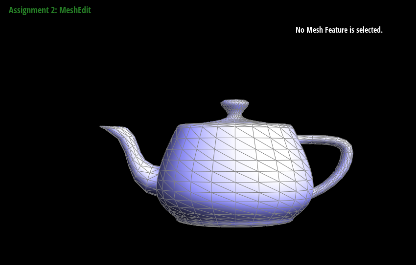
|
============================================================================================
In Part 4, we were asked to implement an edge flip mesh operation. An edge flip takes an edge connecting two triangles and flips it so that it connects the other two vertices that were not previously connected, converting the original two triangles into a different pair.
To implement this operation, first we have to gather all important elements of the two triangles. This includes the halfedges associated with the original triangles, the four vertices, and the two triangle faces. This was done by using the halfedge data structure. Once we have all the needed information regarding the original triangles, we must reassign the values related to the halfedge pointers so that they can refer to the proper updated elements. For each halfedge we assign their new neighbor, their twin halfedge, what vertex it is associated with, and what edge and face it belongs to. The flipped edge, for example, has its halfedges associated with the two previously unconnected vertices. Once all halfedges are reassigned, we reassign for each vertex their new updated relative halfedge.
Most of the bugs related to this part were due to improper reassignment of halfedges properties. These were solved by utilising the check_for()
provided function and the element inspector in the GUI to manually check the reassigned elements of halfedges, and then double-checking the diagram.
The images below show a close-up of an area of the teapot model before and after applying a few edge flips to create a pattern:
|
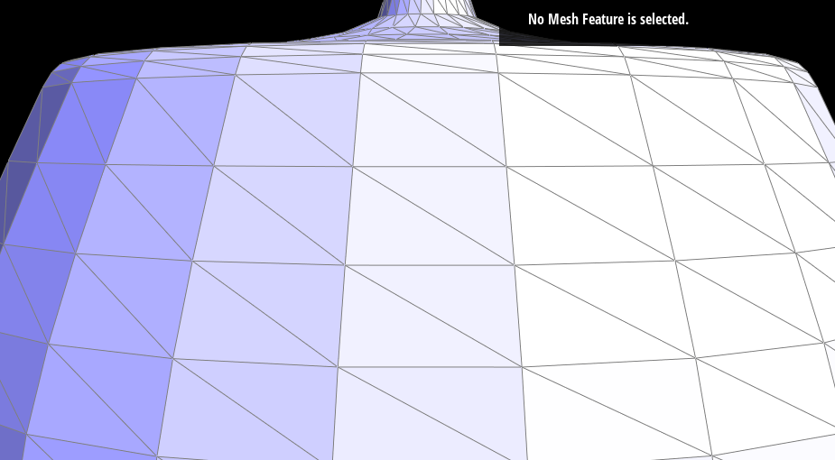
|
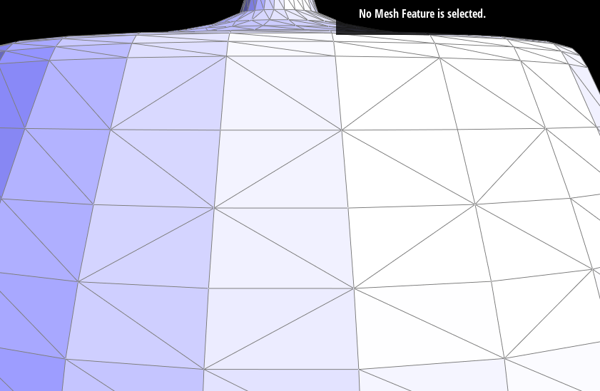
|
============================================================================================
Part 5 of this project asks us to implement another mesh operation: edge split. When an edge between two triangles is split, it splits the edge in two and creates two other edges that connect the two unconnected vertices, splitting the two triangles into four triangles and creating another vertice in the point where all inner edges meet. The implementation is very similar to the edge flip, made mostly through the reassingment of element properties, however it differs in that more elements are created. To be more specific, six halfedges, three edges, two faces and one vertex must be created in this part. The only different step when splitting an edge is the assignment of the new vertex coordenates, which can be easily calculated by the means of the two vertices that connect the original edge. After reassigning the elements of all halfedges, and properly updating the relative halfedges of all faces, vertices and edges, the edge is split.
Bugs relating to this part of the project were mostly noted during the implementation of Part 6. Initially, the code seemed to be working correctly,
but upon implementation of Part 6 it was noted that (1) There were more elements that were created than necessary, which had to be removed, and instead
existing elements were reassigned to match the previously created elements (2) There was improper assignment of the isNew property of the edges, which lead
to problems in Part 6. These were resolved by utilizing the element inspector in the GUI in the first case and pure trial and error on the second. In
Part 6, during debugging with the element inspector and the check_for() function, it was also seen that the halfedge returned by the
->halfedge() was not the expected halfedge according to the diagrams provided, and so a long process of renaming, reorganizing and reassigning
halfedges was done before solving the two problems mentioned above, and these changes were kept for convenience, but I don't believe they were necessary.
The images below show the same area of the teapot highlighted in Part 4 with the before and after of edge splits, along with a combination of edge splits and edge flips.
|
|
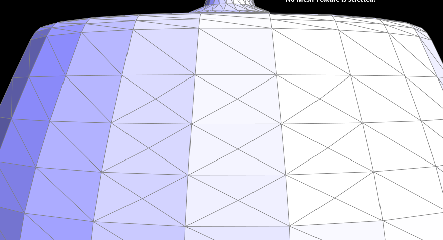
|
|
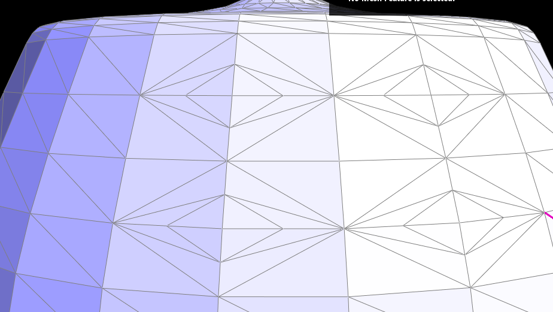
|
============================================================================================
In the last part of the project, we implemented Mesh Upsampling with Loop Subdivision. This process uses a combination of edge splits and flips to upsample a mesh by dividing each triangle into 4 smaller triangles and updating all vertices positions with weighted values, creating a higher resolution mesh.
This was implemented in five steps:
newPosition
property of the vertex, so that it can be changed after all mesh operations have been done. Note that in this step, for the sake of future steps, all
existing vertices have their isNew property assigned to false, so to keep track of pre-existing and created vertices.
newPosition property of the edge, since the vertices have not yet been created.
newPosition to the one saved
to the edge in the previous step. Created vertices also have their isNew property set to true.
isNew value of the two vertices that it connects. If they are not equal, we perform a flip on that edge so that it connects the new
vertices.
newPosition.
The images below show a cube going through five iterations of loop subdivision:
|
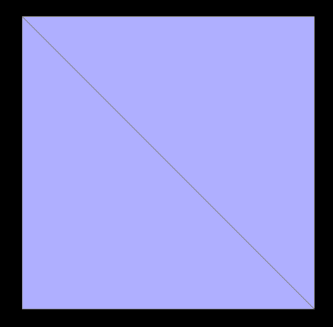
|
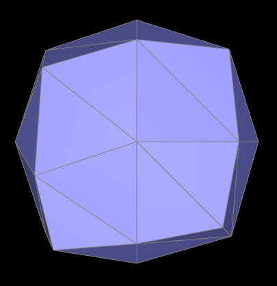
|
|
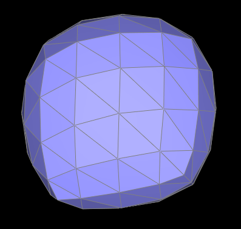
|
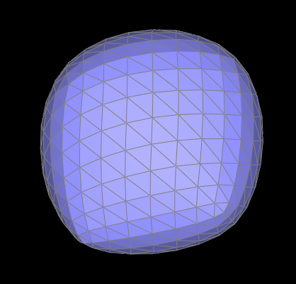
|
|
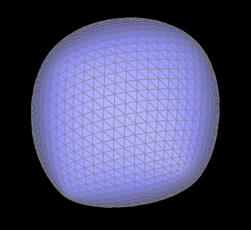
|
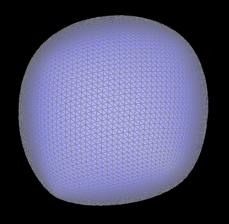
|
In the images above, we can observe that in loop subdivision, sharp edges and corners tend to get rounded off, losing its sharpness, and the upsampled cube seems to become asymetrical. This happens because the faces of the cube are only divided into two triangles diagonally, which when split end up "warping" the model. In the second and third image this becomes apparent by the way the lightning shading reflects off the surface of the cube in a diamond like shape. This effect can be reduced by pre-splitting the edges that run diagonally on the faces of the cube, so that each face is divided into 4 symetrical triangles, with the cube looking the same regardless of orientation. The images below show the loop subdivisions of a cube with pre-splitted edges:
|
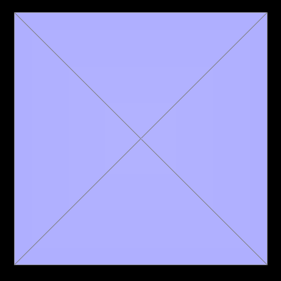
|
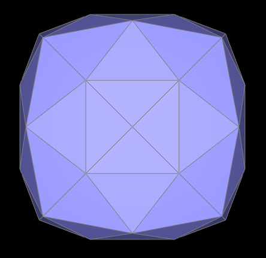
|
|
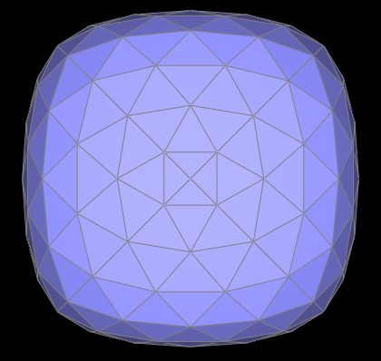
|
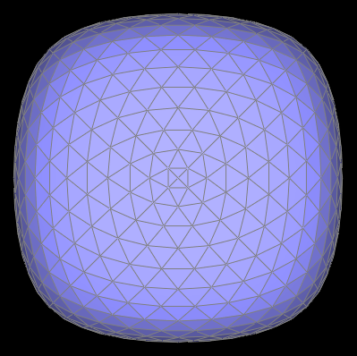
|
|
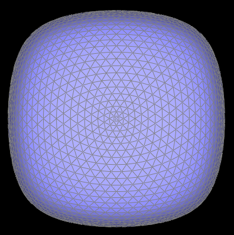
|
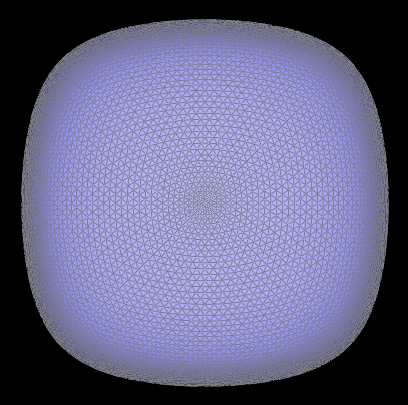
|
Most of the bugs seen in this portion of the assignment were due to problems in the implementation of the edgeSplit function. Changes and debugging to this
was addressed in the Part 5 section. Besides the problems with the split function, a few problems were had when performing the splitting part of the implementation
due to the new edge and old edge filtering. Simply creting an if with the !edge->isNew argument did not attend to our needs, so we reverted back
to saving the initial number of edges in the mesh in a variable and running a for loop based on this, guaranteeing only the old edges were iterated over.
============================================================================================